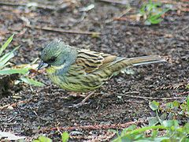
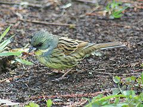

| Black-faced Bunting | |
|---|---|
|  | |
| Adult male | |
| Conservation status | |
| Binomial name | |
| Emberiza spodocephala Pallas, 1776 |
| Black-faced Bunting | |
|---|---|
|  | |
| Adult male | |
| Conservation status | |
| Binomial name | |
| Emberiza spodocephala Pallas, 1776 |
The Black-faced Bunting, Emberiza spodocephala , is a passerine bird in the bunting family Emberizidae, a group now separated by most modern authors from the finches, Fringillidae.
It breeds in southern Siberia across to northern China and northern Japan. It is migratory, wintering in northeast India, southern China and northern southeast Asia. It is a very rare wanderer to western Europe.
Black-faced Bunting breeds in dense undergrowth along streams and rivers in the taiga zone, and lays four or five eggs in a ground or tree nest. Its natural food consists of insects when feeding young, and otherwise seeds. It winters close to water in agricultural or other open bushy habitats.
This bird's general appearance and terrestrial feeding habits give the impression of a Dunnock with a bunting's bill. It is similar in size to a Reed Bunting at about 16 cm long. The breeding male has a dark grey head with a mix of yellow green and black between the bill and eye. The upperparts are brown and heavily streaked with black, except on the rump. The rump is brown and the tail is also a dark brown. The underparts are yellowish white with some fine dark brown flank streaks. The stout bill is pink.
Females and young birds have a weaker head pattern, with olive-grey cheeks and a weak creamy white supercilium. The underparts are creamy yellow heavily streaked with dark brown.
The bird's call is like a tzii or tzee. It sound very “metallic” and it is a very short and not exactly a song at all. It nests on trees or on the ground and lays about 4 to 5 eggs.

{kind=link}
{kind=link}